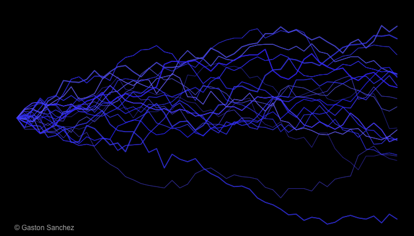

# ========================================================================
# Blue Lightnings
# ========================================================================
# size
n <- 500
# generations
gens <- 50
# colors
blues <- hsv(h = 0.65, s = runif(20, 0.8, 1), v = 1,
alpha = runif(20, 0.6, 0.9))
whites <- hsv(h = 0, s = 0, v = 1, alpha = runif(20, 0.1, 0.7))
png("blue_lightnings.png", width = 700, height = 400)
# set graphical parameters
op <- par(bty = "n", mar = c(0, 0.2, 0, 0.2), bg = 'black')
# open plot
plot(1:gens, rep(0, 50), type = 'l', xlim = c(1, gens), ylim = c(0.15, 0.85),
axes = FALSE)
#rect(0, 0, 50, 1, col = "black")
for (j in 1:25)
{
# initial probability
p <- 0.5
# empty vector of frequencies
freq <- c(p, rep(NA, gens-1))
# get generations
for (i in 2:gens)
{
aux <- rbinom(1, n, p)
p <- aux / n
freq[i] <- p
}
lwds <- sample(seq(0.5, 2.5, by = 0.15), 1)
lines(1:gens, freq, type = 'l', col = whites[j], lwd = lwds)
lines(1:gens, freq, type = 'l', col = blues[j], lwd = lwds)
}
# signature
legend("bottomleft", legend = "© Gaston Sanchez", bty = "n",
text.col = "gray70")
# reset par
par(op)
dev.off()